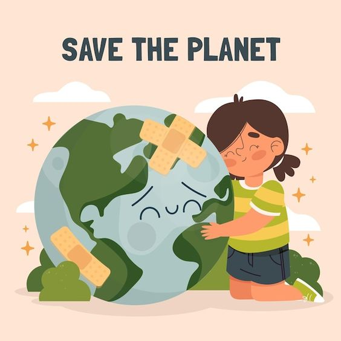

"La contaminación global es un desafío urgente. Conocer sus causas y efectos es el primer paso hacia un futuro más sostenible. Únete para proteger nuestro planeta."
La contaminación global se refiere a la degradación del medio ambiente debido a la liberación de sustancias nocivas, residuos y gases de efecto invernadero. Afecta la calidad del aire, agua, suelo y vida silvestre, amenazando la salud humana y el equilibrio ecológico.
La contaminación global es crucial debido a sus impactos en:
Este sitio web tiene los siguientes objetivos:
| Menú | |
| Impacto Ambiental de la Basura | Enlace |
| Contaminación del Agua | Enlace |
| Información personal | Institución | Materia | Docente | Alumna |
| reparatoria Federal por Cooperación C.P "Gilberto Martínez Gutiérrez" | Cultura digital II "Examén" | Norma Angélica Avendaño Chávez | Alexandra Merino Machón |